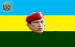

Barlovento
 De: La Frikipedia, la enciclopedia extremadamente seria.
De: La Frikipedia, la enciclopedia extremadamente seria.
| De la serie ciudades del mundo:
|
| Barlovia
|
| 
|
|
| (Bandera)
|
(Escudo de armas)
|
|
| Topónimo oficial
|
Mirandina
|
| País
|
Venezuela
|
| Código postal
|
NPI
|
| Superficie
|
Llena de matas de cacao
|
| Altitud
|
Cerca del mar
|
| Distancia
|
A tres horas de Petare
|
| Fundación
|
En la Colonia
|
| Población
|
Alrededor de 500.967 negros
|
| Gentilicio
|
Barlovio
|
| Alcalde
|
Una chavista ahí
|
| Barlovento, Barlovento, tierra ardiente y de tambor...
|
Barlovento, es una gran parte del estado Miranda (en Venezuela) conocida como la ciudad de los negros, esta gran parte geográfica si se le puede decir así se divide en pueblos muy pequeños y otros grandes como el muy conocido Higuerote, Caucagua, el Clavo, Panaquire, el Guapo y Mamporal.
Historia
Barlovento fue fundado en la época de la Colonia por unos negros que expropiaron un lote de tierras a un mantuano ahí. Allí se asentaron e hicieron casas al lado de las matas de cacao, y así fueron viviendo hasta el presente. Y ya...
Economía
La económia en Barlovento es totalmente poca ya que turísticamente no gana nada de dinero y en otros casos algunos pueblos ganan dinero vendiendo los famosos chopos. Algunas personas siembran el famoso y horrible pomagás, una fruta muy conservada y que por cierto sabe mas feo que la comida para gatos, los pueblos que siembran esta fruta se encuntran en la parte oeste de Barlovento, tales como la Brisa, Caucagua, Sta. Rosalia, Urape y otros pueblos mas aburridos.
Pueblos Principales
Esto es lo que más vas a ver aquí. Eso y l@s negr@s
- Caucagua: Caucagua es el principal pueblo de esta localidad, viven de la cafunga que parece pipo de viejo, los horribles besos de coco que por cierto son sabrosos, y la mayoria de las personas que hablitan aqui son santeras que ni siquiera saben porqué son santeras. De aquí podemos sacar otros pueblos mas como El Clavo, la famosa Brisa, Urape, Panaquire, la Barsa etc, etc. etc...
- Higuerote: es el segundo pueblo mas grande de esta localidad, tiene muchas variedades y que en turismo, eso nada mas son mafiosos que vienen a entrgar mercancias y se quedan unos dias como turistas. Higuerote tiene muchas playas bellas y ríos bellos, podemos decir que el río mas limpio y sabrosos es el Tuy donde todos los negros de esta localidad se bañan, por eso es que huelen tan sabrosos estas personas. Pueblos que componen esta localidad son: Capaya, Mamporal, Sta. Rosalia.
Divisiones
Aquí las personas se dividen en 2 tipos:
- Negros del oeste: Son los mas arrogantes de esta localidad, se visten de tukki y normales, simpren andan descalzos y hacen todo lo posible por tener mucho dinero, sus armas principales son el machete y armas pequeñas como el 3-8 y la beretta. Viven de la pesca y la siembra
de [[marihuana]] y tradicionalmente hacen las cafungas.
- Negros del este: Son los menos nombrados y mas amables, viven de la pesca y robo de camiones volcados, sus armas principales las metralletas y granadas que les quitan a la policía, visten de ropa sifrina y estos sí andan con zapatos.
Nota: Dentro de poco tendran héroes que conforman y confomaron el bloque mirandino.
Más pueblos del Estado Miranda
Autor(es):
- Roms
- Santa wii
- Anticristo2007
- Osmach94
- Bladguer
- Harry El del Pote
- Genericool
- Alangd
Frikipedia 2005-2016, Licencia
GFDL 1.2 - Extraído por FrikiLeaks